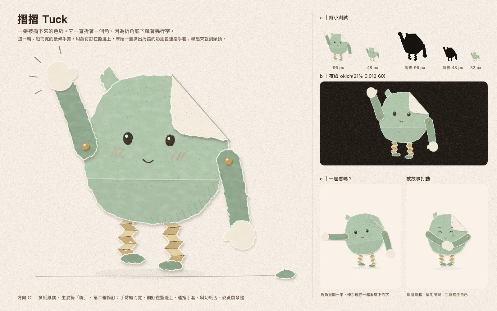
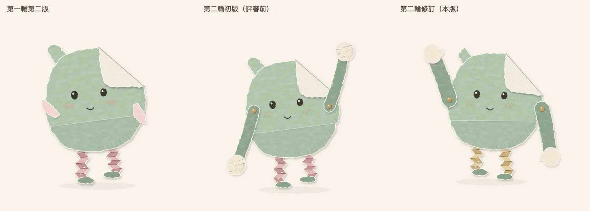
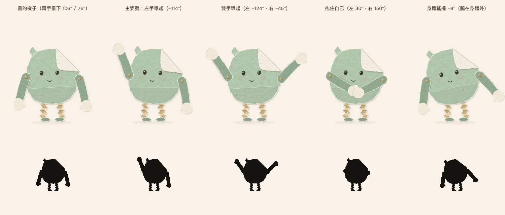
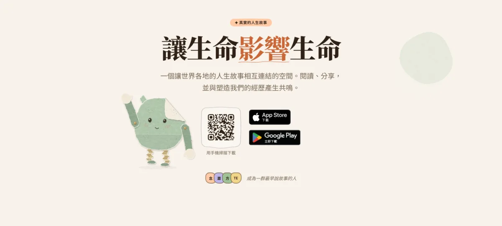

方向 C′ 撕紙紙偶 只修手
摺摺 Tuck
一張被撕下來的色紙，一直折著一個角，因為折角底下藏著幾行字。這一輪它多了兩條用銅釘釘在撕邊上的寬紙條手臂，末端是撕出拇指的奶油色連指手套，舉起手來就到頭頂。



1角色概念
人在書頁上折一個角，是在標記「這裡我還想再回來看」。摺摺把最在意的字折起來保護著，信任你才掀開。新的手也有來歷：手臂是撕下身體時剩下的兩條綠色邊角料，用小銅釘釘在撕邊上；手套是從折角背面那種奶油色紙撕下來的，撕的時候順手撕出一個拇指。所以它的手和藏著字的折角是同一種紙。
2外型設計
身體、折角、臉、風琴腿的結構、撕邊和配色都和第一輪第二版相同，身體也沒有縮小。手臂寬 50、往手腕收窄，肩上的銅釘到手套中心約是身體高的一半。主姿勢舉左手，因為右肩正上方就是折角，右手舉高會蓋住它。左上紙舌從圓頭改成窄短的斜切撕口（圓頭在剪影裡像一隻耳朵）。風琴腿從玫瑰色改成麥黃，全身不再有粉色。
3個性與情感
有點害羞、很認真。臉很安靜，情緒交給紙的物理；有了手以後能做的事多了：
- 打招呼：左手繞銅釘舉高，手套在手腕上搖
- 好奇：折角掀開一半，伸手邀你一起看底下的字
- 害羞：用手套按住折角，腿縮短
- 感動：瞇眼、眉毛才出現，雙手在肚子前抱住自己
- 陪伴：坐下、折角整個掀開，和對方的手套碰一下
4手繪風格
和第一輪相同：撕邊的白纖維、膠水貼上去的一點陰影、鉛筆直接畫在紙上的五官。新增的銅釘是全身唯一的金屬，霧面、帶顆粒，看起來也是手作材料。所有紙色都是可替換的變數，例如想把腿換回玫瑰色，只要改兩個變數，不必重畫。
5Landing Page 的應用想像

示意：修訂版放在首頁截圖上，約 215px 高。
出場仍是「紙活過來」：頁面上平躺的一片紙先掀起折角，風琴腿一節一節把它撐起來，最後左手繞著銅釘甩上來揮兩下。停留時呼吸、眨眼，手臂像鐘擺一樣慢半拍跟著身體晃。游標停在附近時它會揮手。兩隻相遇時舉手，手套在半空碰一下。離場時揮手再見，或腿收起、躺平，變回一片普通的紙。
6未來系列化的潛力
每個角色都是一張不一樣的紙，被不一樣地撕下、折過、保存下來。這一輪多了第三條軸：接合方式決定動作的個性。摺摺用銅釘，手臂能整圈甩，所以很愛揮手；用紙膠帶黏手的角色動作有點僵，每動一下膠帶就皺一下，很容易害羞；用縫線結接手的角色手軟軟垂著，擁抱時會整個繞上去；用迴紋針夾手的角色可以把手拆下來遞給你，那是它表達信任的方式。
「銅釘加奶油色圓手」這一組最接近 ChatGPT 參考圖 2；圓身細腿的骨架仍接近 Mr. Men。如果你覺得太像參考圖，可以把銅釘換成紙膠帶或縫線結，其他都不動。
初版手臂又長又細，剪影像棒棒糖，改成短而寬、往手腕收窄；銅釘從臉旁移到撕邊上；手套撕出拇指、拿掉字跡；紙舌改斜切；腿改麥黃；改舉左手，讓折角獨占右上角。
約 7.5–10 人日
全是剛體紙片，每隻手只有一個關節，日夜共用一組圖，不需要動畫函式庫。三案中最低。